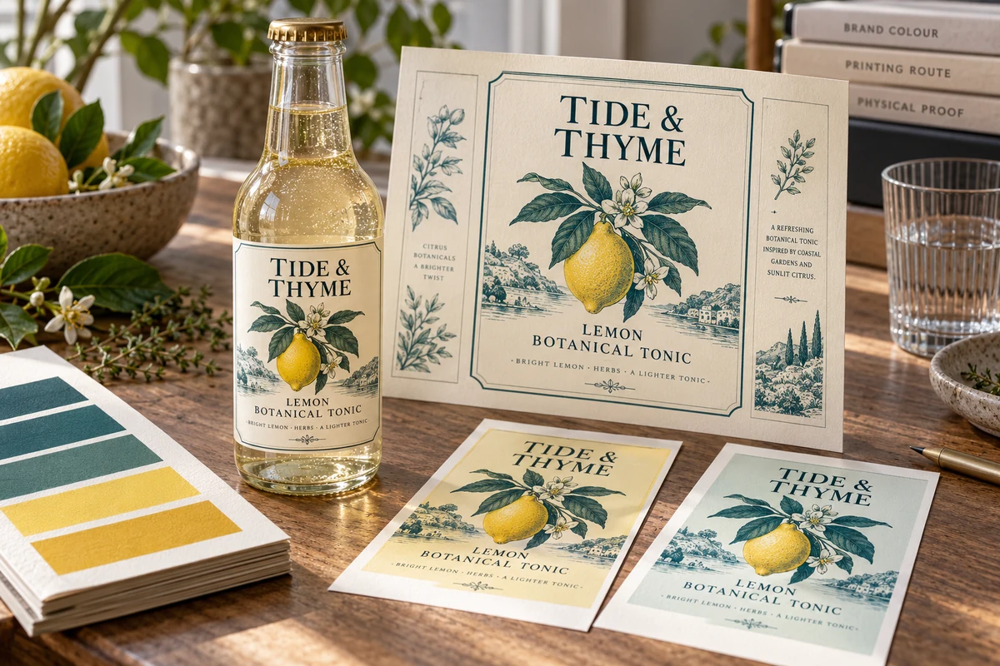

Separate the color target from the quoted reproduction route
For Pantone versus CMYK label printing, ask two questions before accepting the quote: what appearance is the brand asking the printer to target, and how does the proposal intend to reproduce it? A named reference does not by itself say that a separate premixed spot ink will be used. A process-based proposal may instead reproduce an agreed approximation within its particular printing system.
Do not let the file swatch name answer for the printer. Ask the converter to identify the proposed color build, the stock and any white backing or finish that influences the result. Keep that description attached to the quote revision. A target color and a manufacturing route are related decisions, but approving one does not silently approve the other.
Color-target and reproduction approval matrix
| Review item | Buyer supplies or approves | Converter confirms |
|---|---|---|
| Target | Reference system/edition or identified physical master | Whether that reference can guide this proposed job |
| Priority area | Logo, product illustration or other critical region | Which region the sample and discussion address |
| Reproduction | Acceptable proposed route and disclosed compromises | Spot, process simulation or other actual arrangement |
| Construction | Package, face, white layer and protective finish | What the sample represents and any substitutions |
| Evidence | Identified physical sample/proof and approval scope | Which appearance it can demonstrate and what it cannot |
| Acceptance | Named reviewer, agreed viewing and decision rule | Feasibility, open differences and any quoted extra work |
This worksheet supplies no universal color tolerance or claim of an exact match. Agree measurable limits and measurement arrangements with a qualified party if the project needs them. A statement such as close enough is not a useful substitute for naming who approves the physical reference and under which conditions.
Suppose, as a planning example, a tonic brand wants a yellow logo beside a photographic lemon. Process printing may be proposed for the image while a separate color treatment is discussed for the logo. Ask whether that split is feasible and included in the price. Alternatively, the brand may accept an identified process-rendered logo sample to keep the specification simpler. Neither route wins merely because its name sounds more precise.
Compare the evidence before buying another proof
Ask what the offered proof actually shows. A PDF can identify the artwork and proposed separations without establishing the physical appearance on a transparent bottle label. A physical proof may represent a particular medium rather than the final textured stock or finish. Use the proof-scope guide to choose evidence for that remaining uncertainty.
If a process sample is unacceptable, first clarify whether the gap comes from the intended target, the chosen route or a sample that does not represent the proposal. Do not promise that changing to a named spot color will remove every substrate and finishing influence. Ask for the revised proposal and what additional ink, preparation, sampling or repeat-order implications it carries; no prices are assumed here.
Retain the approved sample ID beside the file revision and actual construction. When the stock, white layer or route changes, ask which approval must be revisited. For clear versus white film, the package background is an additional appearance input. Artwork handoff belongs in the separate file manifest, so a design reference cannot be mistaken for an instruction to produce a particular ink system.
Short answer
Compare Pantone and CMYK label proposals by separating the target color, actual reproduction route, construction and physical approval evidence. Material names are candidates rather than approval of a complete construction.
Pantone vs CMYK comparison
| Decision point | CMYK | Pantone reference |
|---|---|---|
| Best use | Full-color artwork, photos, gradients and most label designs. | Brand colors, logo colors and repeat product lines that need a clear target. |
| Color control | Good for flexible full-color printing, but conversion can shift bright colors. | Helps communicate a target color, though final output still depends on process and material. |
| Artwork setup | Use CMYK values in the final file. | Include Pantone number or reference sample when available. |
| Material effect | Paper, film and finish affect appearance. | Paper, film and finish still affect appearance. |
| Common risk | RGB artwork may print duller after conversion. | Expecting a perfect match without proof or material review. |
Why screen color is not enough
Screens use light, while labels use ink or toner on a real surface. A color that looks bright on a monitor can print differently on matte paper, gloss BOPP, clear film or textured stock. Room lighting and product photography can also change how the same label appears.
Material and finish affect color
White BOPP often supports stronger color and clearer small text. Clear BOPP can create a no-label look, but colors may depend on white ink or backing strategy. Matte finish can soften color, while gloss finish can make colors feel more vivid. Textured paper can look premium but may not behave like smooth film.
What to send for color matching
Related guides
For file preparation, read label artwork file setup. For finish decisions, compare matte vs gloss labels. For clear and white film choices, review clear BOPP vs white BOPP labels.
FAQ
Can you match an existing label color?
A reference sample or color number helps. Exact matching depends on material, finish and production method, so proof review is important.
Why did my RGB design print differently?
RGB is built for screens. Printing usually uses CMYK or another print process, so bright screen colors can shift when converted.
Should I choose matte or gloss for brighter color?
Gloss often makes colors feel brighter, while matte can look softer. The right choice depends on the brand style and package use.
A screen proof and color-managed proof approve different things. Read digital proof vs contract color proof.
Send the unresolved specification question
Include target reference and critical color region, artwork revision, proposed stock/finish, quantities and the unresolved reproduction or proof question.
Prepare a label specification inquiry. The contact form opens an email draft; review it and use the listed email or WhatsApp route for attachments. Available construction, sample scope, pricing and timing require confirmation for the actual job.